Each insight below changed something visible on the site. The fragments come from the final interface; references point to interviews (P) and reviews (R).
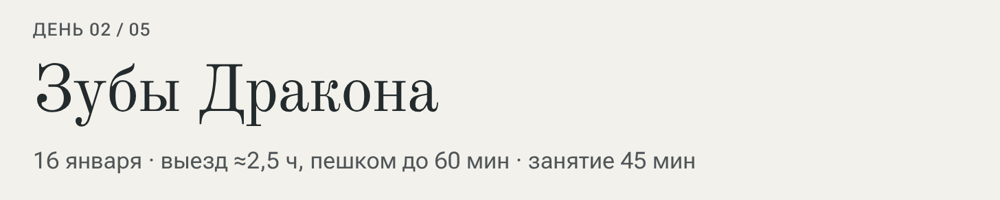
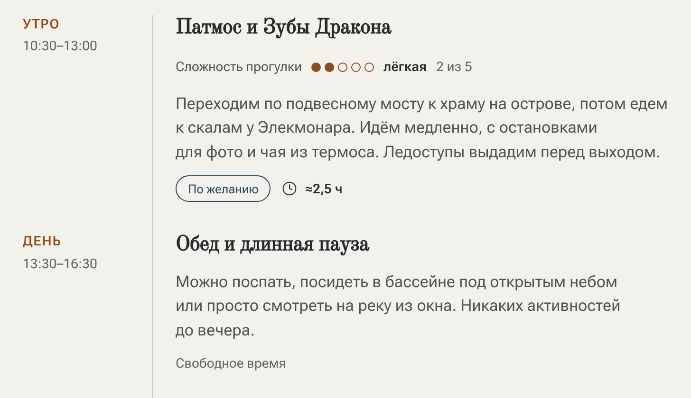
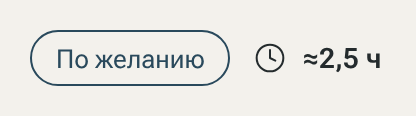
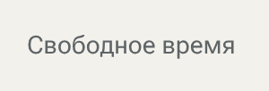
01P01, P02, P05 · R09–R11, R18, R24
Transfers are tiring, and the amount of free time shapes the experience.
Decision Every day shows road time, walk length and free intervals next to the activities.
02P02–P05 · R16–R17
People want to know what happens if they skip a walk or a session.
Decision “For everyone” and “Optional” tags, with an alternative and a place to wait.
Day 01
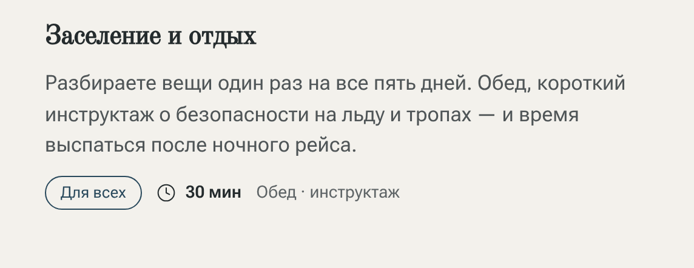
Day 03
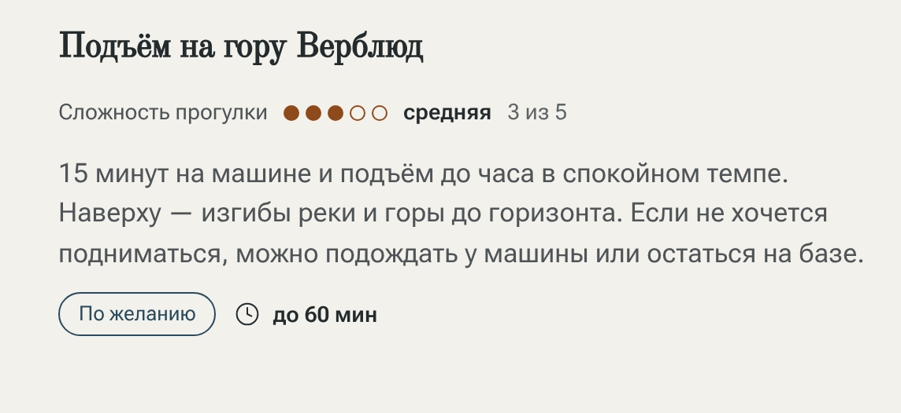
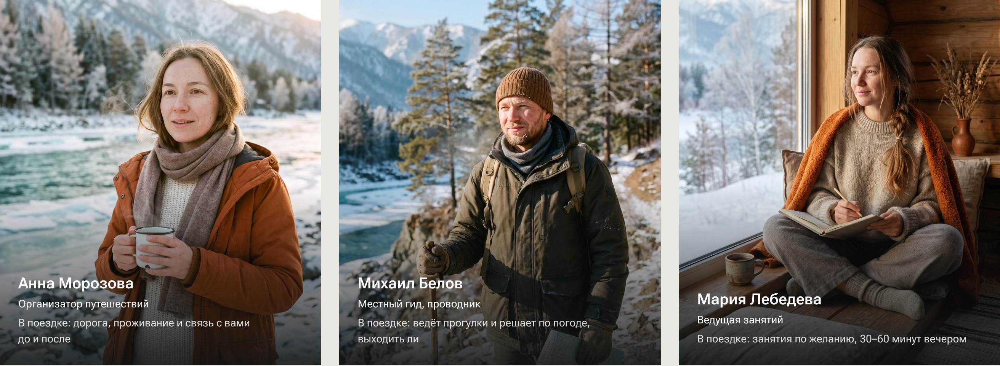
03P01, P02, P05 · R01, R04–R07, R26, R28
The guide, the quality of answers and help on the way matter most.
Decision Coordinator, local guide and session host as separate roles; the coordinator and the guide have their own contacts and hours.
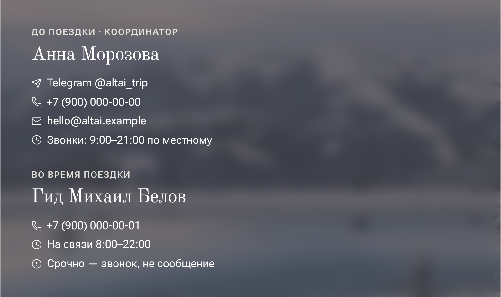
04P01–P05 · R18–R20, R26
Total cost, extras, rooms and payment are checked before any request.
Decision Price per person with what is excluded, room options and the price for two in the form.
05P02, P05
Two participants saved screenshots or made their own notes so they would not search the chat.
Decision A participant guide opened straight from the menu, with a PDF to save — a guide, not an account.
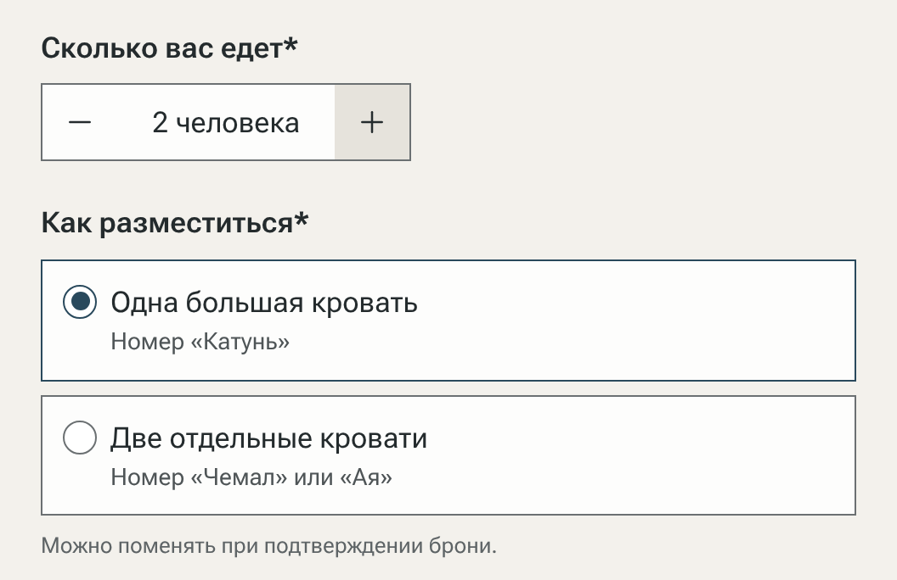
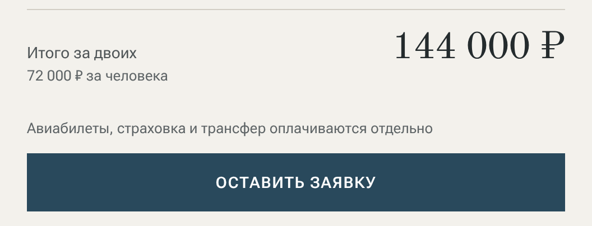
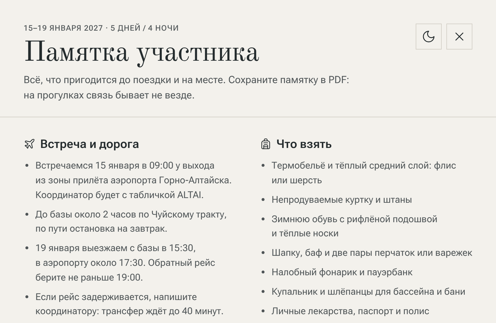
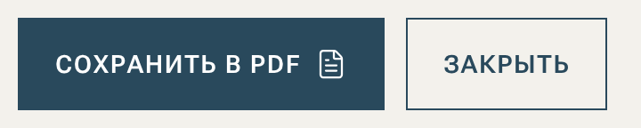